이 글은 전체 2편 중 2편입니다. 긴 영상을 주제 흐름에 맞춰 나누어 정리했습니다.
채널: 장사건물주 강호동 | 길이: 42:44 | 날짜: 20261117
이 글은 전체 2편 중 2편입니다.
2편은 소비 통제 이야기에서 시작된다. 출연자는 직원들 밥을 먹이거나 회식하는 일이 많고, 자신이 사고 쓰는 일도 많다고 말한다. 그런데 “이 정도 사업체에 1,500만 원 쓰는 거 그렇게 많이 쓰는 것도 아니”라고 말해, 사업 규모가 커질수록 지출 자체가 커진다는 현실을 인정한다. 그러면서도 이번 달 500만 원을 썼다는 언급과, 월 500만 원만 쓰겠다는 목표를 세웠다는 이야기가 이어진다.
진행자는 “돈 안 썼다는 건 일만 했다는 얘기야?”라고 묻는다. 이는 소비를 줄이는 행위가 곧 외부 활동을 줄이고 일에 집중하는 것과 연결된다는 해석이다. 실제로 출연자는 “나를 바꿔야 된다. 어떻게 바꿀 거야. 500만 원만 써야겠다”고 말하며 소비 한도를 자기 변화의 목표로 삼는다. 그리고 “500만 원을 밖에 안 쓰려면 일단 많이 나가면 안 된다”고 말한다. 하지만 집에만 있으면 심심하기 때문에 결국 식당으로 가게 되고, 식당에 가다 보면 문제가 보이고 해결책이 보인다는 식으로 이야기한다. 소비를 줄이는 실험이 오히려 사업 관찰의 기회가 되는 셈이다.
이번 달에는 420만 원을 쓴 상태라 목표를 성공할 것 같다고 말하고, 진행자는 “성실해졌다”고 평가한다. 오늘 100만 원을 쓰면 오버된다는 계산도 나온다. 이어서 “이 자리는 형님이 사시고, 월초에 혹시 만날 일 있으면 그때”라는 농담이 나오고, “월초에 하루에 500 써도 되냐”는 웃음 섞인 대화가 이어진다. 소비 통제가 엄격한 원칙이라기보다 스스로를 바꾸기 위한 현실적인 장치로 제시된다.
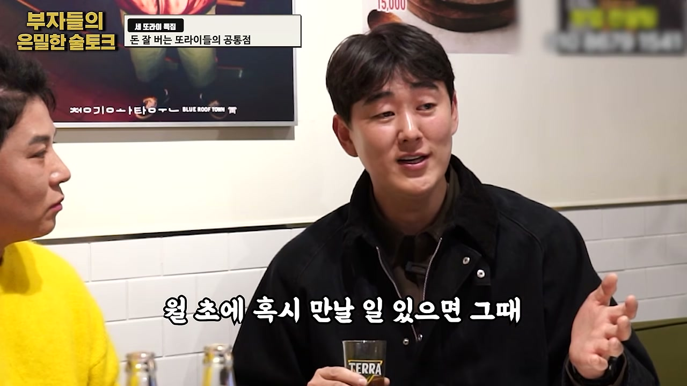
이어서 한 출연자는 자신이 스트레스를 어떻게 풀었는지 이야기한다. 그는 “고시원 두 평에서 살았거든요”라고 말하며, 그곳에 바퀴벌레가 드글거리고 쥐새끼도 시끌시끌 법석을 하는 환경이었다고 회고한다. 월세는 20만 원짜리였고, 성공하겠다고 서울로 올라왔지만 너무 스트레스 받고 고통스러웠으며 자존감도 낮았다고 말한다. 이 장면은 이후의 성공담이 단순한 재능이나 운이 아니라, 실제로 바닥에서 올라온 경험과 연결된다는 점을 보여준다.
그가 극복의 계기로 삼은 것은 책이었다. 당시 “꿈꾸는 대로 이루어진다”는 책을 봤고, 자신이 꿈꾸고 싶었던 것을 문짝에 다 붙여놓았다고 말한다. 진행자는 “이지성의 꿈꾸는 다락방 읽었구나”라고 반응한다. 꿈을 이미지로 붙이고 글로 쓰는 행위는 단순한 낙관이 아니라, 낮아진 자존감을 끌어올리고 살아갈 이유를 계속 만드는 자기 암시 장치였다.
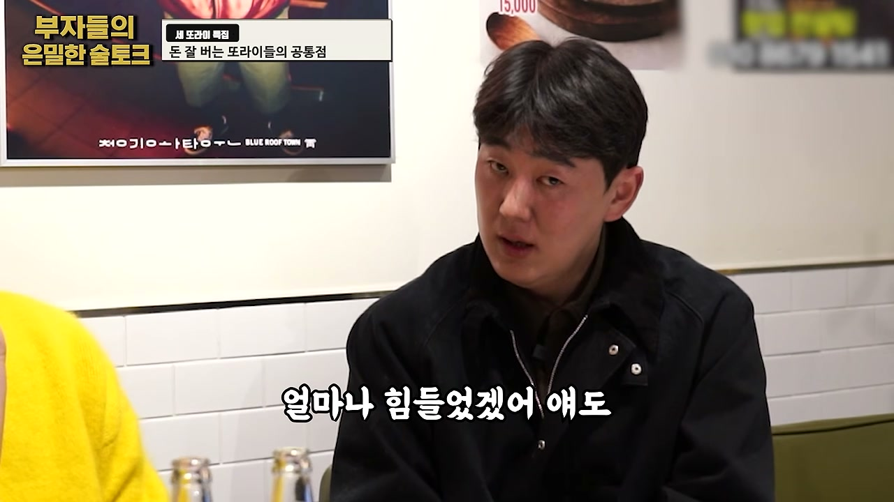
이야기는 데일 카네기 등 여러 책으로 확장된다. 그는 책에서 배운 내용을 “다 붙여놔”라고 표현하며, 이미지 기법과 100번 쓰기를 실천했다고 말한다. 이는 목표를 머릿속에만 두지 않고 눈에 보이는 곳에 배치하고, 손으로 반복해서 쓰는 방식이다. 진행자는 “그걸로 내 자존감도 끌어올리고, 내가 살아갈 이유를 계속 만들었던 것 같다”는 말에 공감한다.
구체적인 예로 미용실에서 기다리다가 잡지에 있던 스포츠카 벤츠 사진을 몰래 찢어서 붙여놓았다는 일화가 나온다. 진행자는 “또라이 맞다”고 웃으면서도, 일반 사람들이 그렇게까지 하겠냐고 말한다. 이어서 “야한 사진 같은 거 붙여놓은 거 아니야?”라는 장난이 나오고, “얼굴에 그냥 보여”라는 웃음 섞인 대화가 이어진다. 이 일화는 목표를 향한 집착이 주변에서는 이상하게 보일 수 있지만, 당사자에게는 절박한 자기 회복의 수단이었다는 점을 보여준다.
진행자는 “이렇게 살리는구나”라고 감탄하고, “얼마나 힘들었겠어요”라며 웃으면서 이야기하지만 실제로는 상당한 고통이 있었을 것이라고 짚는다. 화려한 성공담 이면에 2평 고시원과 낮은 자존감, 스트레스가 있었다는 점이 강조된다.
또 다른 출연자는 자신만의 스트레스 처리법을 설명한다. 스트레스 요인이 있으면 혼자 그 스트레스에 대해 곰곰이 생각해 본다는 것이다. 생각하다 보면 내가 해결할 수 있는 것과 해결할 수 없는 것이 나뉘는데, 대부분은 해결할 수 없는 일이다. 그래서 먼저 그 사실을 받아들여야 한다. 대부분의 사람은 받아들이지 않기 때문에 스트레스가 올라간다는 설명이다.
받아들인 뒤에는 “네가 뭘 할 수 있는데”라고 자문하고, 할 수 있는 일을 모두 써 본다. 첫 번째로 무엇을 할지 아주 간소하게 적고, 그다음 다시 지우면서 한두 개만 남긴다. 이때 컴퓨터로 하는 것보다 펜으로 직접 수기로 쓰는 것이 힘이 크다고 말한다. 손으로 쓰는 행위 자체가 생각을 정리하고 실행 가능한 행동만 남기는 데 도움을 준다는 것이다.
이 방식은 앞서 나온 이미지 기법, 100번 쓰기와도 연결된다. 목표를 시각화하고 글로 반복하는 행위가 자존감을 올리고, 스트레스를 통제 가능한 행동으로 전환하는 도구가 된다.
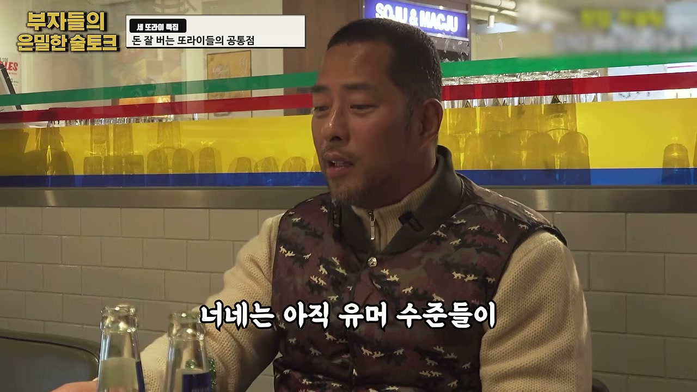
진행자가 “형은 그때 힘든 시기를 어떻게 이겨 냈어?”라고 묻자, 한 출연자는 스트레스 해소 방식이 운동이라고 답한다. 이어서 “책은 생각의 근육을 키우는 거고, 운동은 육체적인 근육”이라는 비유가 나온다. 진행자는 “책은 생각의 근육이고 운동은 육체적인 근육이니까 이 두 가지를”이라며 받아들이고, “운동을 제일 많이 하잖아?”라고 묻는다.
이어서 “생각의 근육은 어떻게 키웠어?”라는 질문에 대해, 최근 이사를 했는데 서재 세 면 정도에 수천 권의 책이 있었다고 말한다. 진행자는 “형 여기까지 온 건 뽀록이 아니야. 그 책을 읽었기 때문에 책임져”라고 농담한다. 그러자 “책임져?”라는 되묻고, “응”이라는 답이 이어진다. 진행자는 “형 유머지?”라며 “너는 아직 유머의 수준들이 내가 보기엔 되게 낮아. 유머부터 좀 연습을 해야 될 거 같아”라고 놀린다. 이어서 “배수해진 개그”, “자기가 말하고 자기가 제일 많이 웃고”, “형 또라이 맞다고”라는 웃음 섞인 평가가 나온다. 이 대목은 독서와 운동을 성공의 두 축으로 제시하면서도, 출연자들의 인간적인 관계와 유머를 드러낸다.
성공의 기준에 대한 이야기도 이어진다. 한 출연자는 “저는 일단 1,000억을 벌고 싶어요”라고 말한다. 진행자가 “가능하지? 우리 지삼인”이라고 묻자, “1,000억을 일단 벌고 싶고”라고 반복한다. “얼리 엑싯한 거 아니야?”라는 질문에는 “아니야. 아직 좀 부족해요. 920억 정도”라고 답해 웃음을 만든다. 이는 1,000억 목표가 농담처럼 제시되지만, 동시에 실제로 큰 목표를 세우고 있음을 보여준다.
그는 1,000억을 보는 것이 인생 목표이고, 본질적으로는 시간과 공간에 여유가 있었으면 좋겠다고 말한다. 아직은 현장에서 뛰고 있고, 정서적 불안감이 사라졌으면 좋겠다는 바람도 밝힌다. 진행자는 “불안감 있지 다 살아가면서”라며 공감하고, “거기서 1,000억을 더 번다고 뭐가 크게 달라지는지”라고 묻는다. 이에 대해 그는 돈을 더 벌려는 노력의 이면에는 현재 느끼는 불편함이 있다고 설명한다. 예를 들어 피디님과 둘이 있으면 불편할 게 없지만, 자산이 더 많은 사람과 있으면 불편하다는 농담 섞인 예를 든다. 결국 성공은 숫자뿐 아니라 관계와 정서적 안정까지 포함하는 개념으로 확장된다.
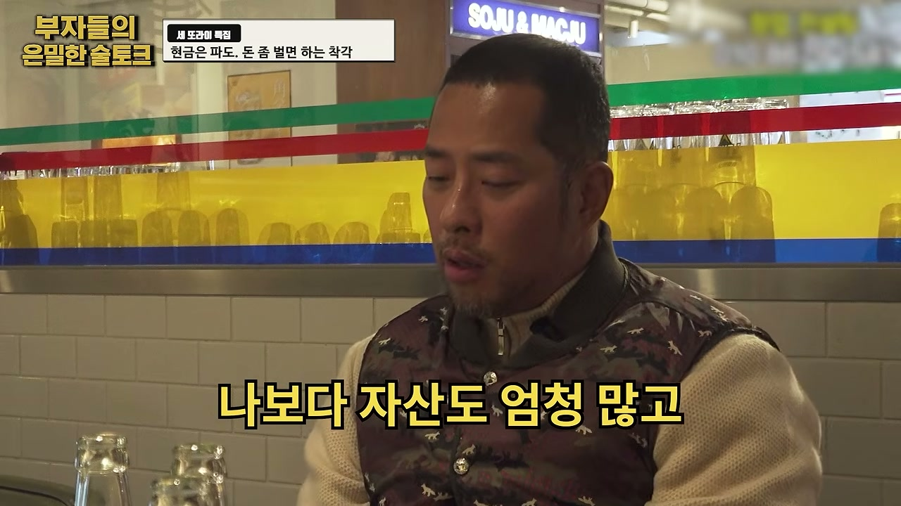
한 출연자는 “나는 되게 좋은 금액에 엑싯을 했고”라고 말한다. 엑싯은 대기업에 했고, 그 과정에서 법무, 세무, 노무, 현장, 앞으로의 사업 계획에 대한 실사를 받았다. 대형 회계 로펌을 통해 KPMG에서 실사를 진행했다는 언급과 함께 “3.3”이라는 말이 나온다. 이어서 대기업이 자영업자 출신 회사를 실사하는 과정이 얼마나 빡빡한지 설명한다. 세무서로 따지면 조사 4국을 받은 것이고, 검찰 조사로 따지면 특검을 받은 것과 같다는 비유다.
그러나 그는 “근데 인정을 받았다”고 말한다. 그 인정을 받았다는 성취감이 그동안 열심히 했던 결과값에 대해 “그래도 내가 잘 해왔구나”라는 생각을 들게 했고, 그 마음이 너무 좋았다고 말한다. 앞으로 또 하면 되는 일이고, 감사한 시간이었다고 정리한다. 살면서 한 번쯤 리스크가 없는 기회를 정말 받은 것이고, 그것은 운이었다고 겸손하게 표현한다.
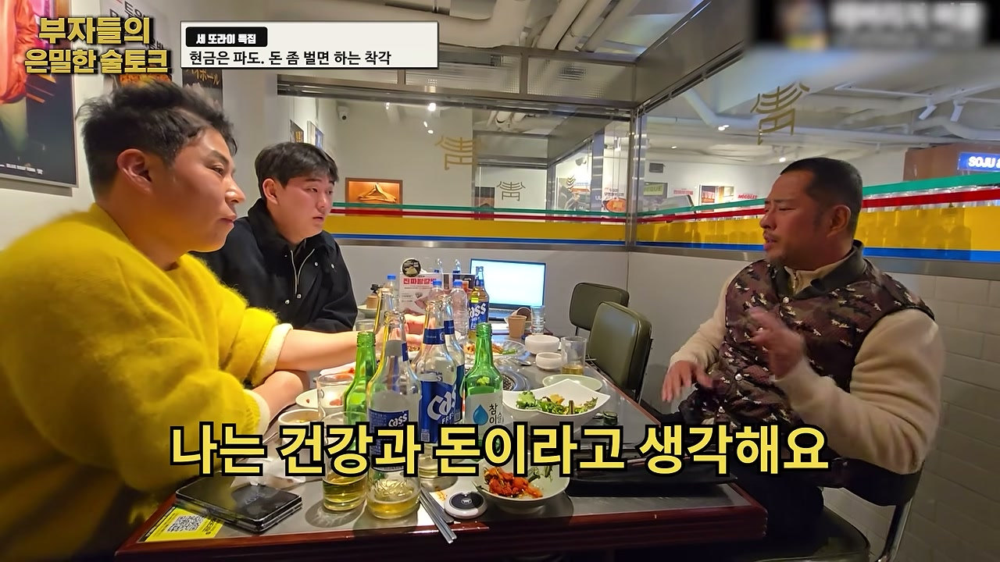
이어서 자산과 위기에 대한 논의가 나온다. 진행자는 “형도 형 건물 지금 몇 개 있고, 은행 부채랑 다 빼면서 형도 한 1,000억 정도 된단 말이야”라고 말하며 자산의 중요성과 최근 건물 엑싯을 언급한다. 이에 대해 한 출연자는 사업이든 자산이든 가족이든 사람에 의해서든 위기가 꼭 온다고 생각한다고 말한다.
그는 위기 속에서 나를 지켜줄 것이 무엇인지 물어봤을 때 “건강과 돈”이라고 답한다. 그 두 가지 외에는 사람도 아니라고 말한다. 운동을 하는 이유는 건강을 단단하게 하기 위해서이고, 돈은 나를 지키기 위해서 버는 것이다. 이때 사업의 돈과 자산의 돈은 다르다고 구분한다. 사업은 사람 일을 해야 되고, 자산은 돈 일을 하는 것이다. 사람은 변할 수 있고 의리도 꺾일 수 있지만, 자산은 금이나 부동산, 전문성이 있는 주식 같은 경우 크게 배신하지 않는다는 것이다.
또한 자영업자들은 식당을 하려고 하는 위치를 보면서 일반 사람 이상으로 엄청난 고민을 해 왔기 때문에, 그 눈을 갖고 부동산을 보면 유리하다고 말한다. 결국 식당을 보는 관점과 부동산을 보는 관점은 비슷하다는 주장으로 이어진다.
한 출연자는 “내가 3억을 투자해서 1,000만 원을 벌어. 그럼 이 돈이 감가상각 있지, 재투자하지, 이런 부분을 통해서 얼마 세이브를 할 수 있을 거 같아?”라고 묻는다. 이에 대해 “돈이 계속 녹으니까”라는 답이 나온다. 즉, 매출과 이익만 보는 것이 아니라 감가상각과 재투자 비용을 고려해야 하고, 현금은 시간이 지나면 가치가 줄어든다는 인식이 깔려 있다.
그는 돈을 버는 것도 중요하지만 이 돈을 자산화시키는 것이 중요하다고 말한다. 개인적으로 식당을 하고 자영업을 하는 사람들이 유리한 것은 부동산이며, 자신은 그쪽을 일찍 눈을 떠서 시작했다고 말한다. 코로나 때도 사업을 했지만, 청기와타운으로 브랜드가 유명해진 것과 별개로 그전에 돈을 더 잘 벌던 시기도 있었다고 회고한다. 이는 브랜드知名度와 실제 현금흐름, 자산 축적이 별개의 문제라는 점을 시사한다.
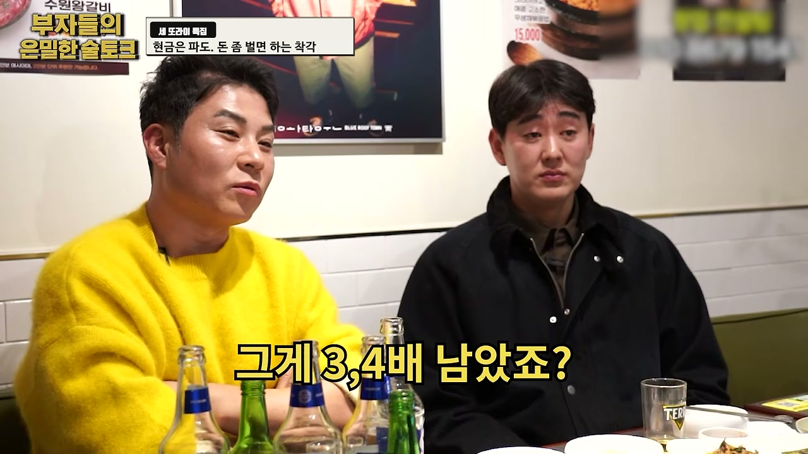
코로나 시기는 고정비용과 매출 압박이 동시에 오는 힘든 시기였다. “나는 괜찮아요”라고 말하면 거짓말쟁이라는 표현이 나올 정도로 힘들었다고 한다. 그때 건물을 4억에 팔았고, 그 건물이 세 배에서 네 배 남았다고 말한다. 남은 수익도 의미가 있지만, 더 중요한 것은 그 자산이 위기에서 자신을 지켜줬다는 점이다. “아까 얘기했던 것처럼 위기에서 나를 지켜줄 건 자산인 거야. 최후의 보루처”라는 말로 정리된다.
반면 사업이 어려울 때 미래의 돈을 땡겨주는 사람은 없다고 강조한다. 진행자도 “형 나도 건물을 갖고 있어서 여기까지 올 수 있었거든요. 내 힘든 거를 이걸로 보호를 받더라고요”라고 공감한다. 이어서 반포 부동산이 60억가량 올랐다는 언급이 나오고, “바꿨으면”이라는 말과 웃음이 이어진다. 이 대목은 부동산이 단순한 투자 수단이 아니라 사업 위기를 버티게 하는 방어 자산이라는 관점을 보여준다.
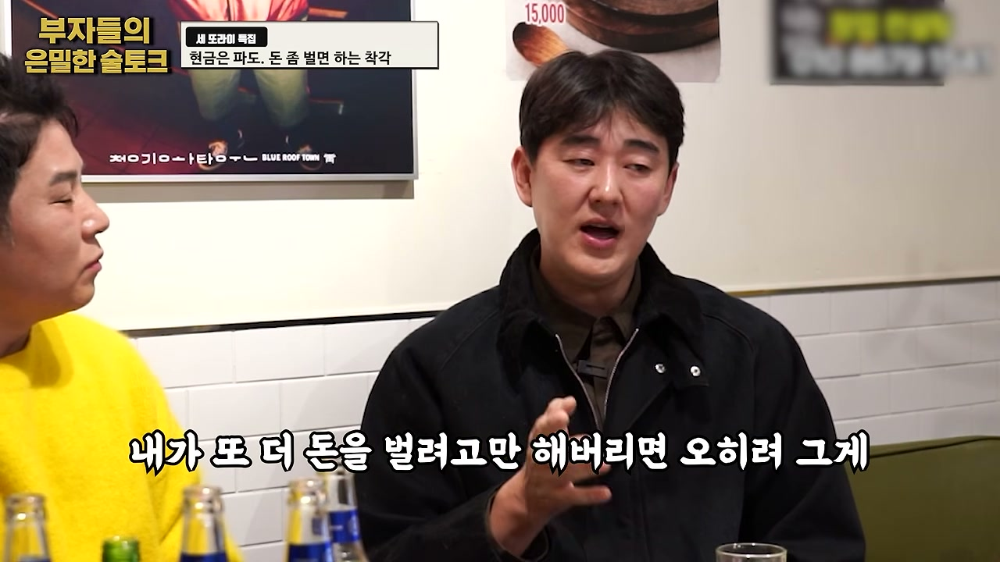
돈에는 밀물과 썰물이 있다는 표현이 나온다. 돈이 벌릴 때는 “진짜 미친듯이 벌려요. 얼마 벌리는지도 몰라”라고 말할 정도로 좋을 수 있지만, 빠질 때는 손가락 사이로 팍 빠진다. 그래서 돈이 들어올 때 자산에 묶어놓는 장치가 필요하다. 자산은 자고 있어도, 일하고 있어도, 술 먹고 놀아도 인플레이션에 따라 가치가 계속 오른다. 이는 현금을 계속 들고 있기보다 자산으로 전환해 두어야 한다는 실질적인 재무 전략이다.
또한 “1억에 사서 10억에 팔았다”, “30억에 사서 60억에 팔았다”처럼 차익만 생각하는 부동산 개념을 넘어서야 한다고 말한다. 장사하는 사람들은 유동성이 좋은데, 유동성이 좋다는 것은 벌 수도 있고 까먹을 수도 있다는 뜻이다. 돈을 더 벌려고만 하면 오히려 잃을 확률의 경우의 수가 커지고, 경우의 수가 커질수록 돈을 벌 확률은 줄어든다. 자신이 40대 중반이고 아들이 12살, 다른 아들이 15살쯤 된다는 이야기를 하며, 3~4년 뒤에 크게 망했다고 생각하면 얼마나 서러울지 모른다고 말한다.
진행자는 “이거는 진짜 중요한 얘기”라며, “돈 벌 생각만 하면 안 되고 지킬 생각을 해야 되는 거야”라고 정리한다. 건물이 있었는데도 한 번에 망한 사례를 언급하며, “지하 10층까지 갔다 올라온 거”라고 표현한다. 이는 성공한 사람일수록 자산을 지키는 관점이 필요하다는 경고로 읽힌다.
창업 이야기로 넘어가며 “무권리로” 시작했다는 점이 강조된다. 한 출연자는 자신이 모은 4,000만 원과 주택 대출 4,000만 원을 합쳐 8,000만 원으로 1층 공사를 했다고 말한다. 보증금 3,000만 원에 인테리어 5,000만 원을 쥐어짜서 ‘호박식당’이라는 이름을 지었다. 즉, 권리금을 주지 않고 시작한 창업이었다.
당시 동대문 상권은 우리나라 도매와 의류 쪽이 너무나 호황기여서 현찰을 막 들고 다니던 시기였다. 15년 전쯤의 일이며, 당시 그 공간은 황무지 같은 곳이었다고 회고한다. 지금은 주변 개발로 달라졌지만, 그때는 작은 공장이나 의류 공장, 회사들은 있었는데 공급처가 없었다. 모든 시장은 수요와 공급의 원리이므로, 그는 “내가 여기서 이거 하면 망하진 않겠다”고 생각했다. 이미 그 공간에서 불판을 닦아본 경험이 있었기 때문이다.
예상은 적중했다. 경험에 의한 자신감이 있는 상태에서 시작했고, 낮에는 작은 사무실에서, 새벽에는 동대문 상인들이 도매 장사 끝나고 와서 문전성시를 이뤘다. 이 경험을 바탕으로 “장사하려면 적어도 6개월, 1년은 경험해야 돼”라고 조언한다. 이어서 치킨, 소곱창, 돼지고깃집 등 여덟 개를 직영점으로 운영했고, 2009년에 시작해 2010년, 2011년, 2012년까지 이어졌다고 말한다.
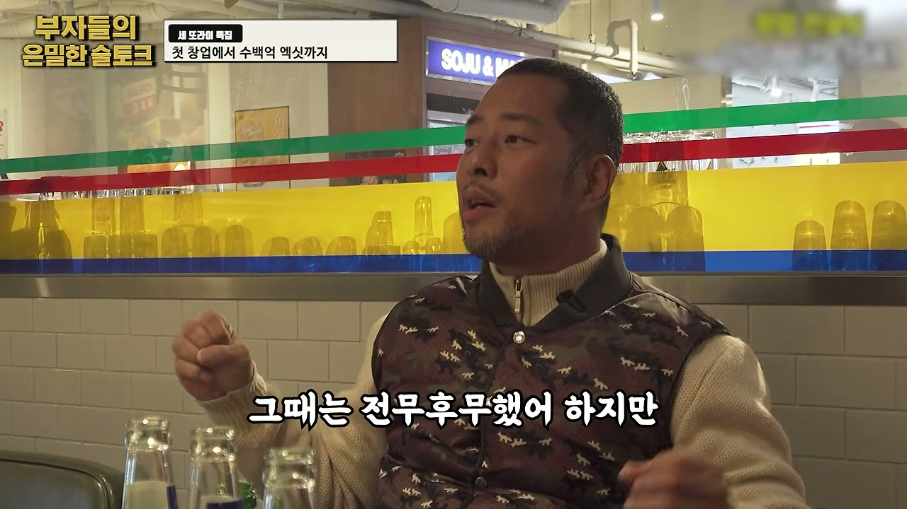
직영점 확장 이후 “그게 다 잭팟 터진 거야?”라는 질문에 “다 괜찮았어”라고 답한다. 그중 하나가 특히 잘된 사례가 있었는데, 당시 집이 한남동이었다. 한남동에 조그만 자리가 났고, 그때 바르다 김선생, 리김밥 같은 브랜드가 막 올라오던 시기여서 “여기에 김밥 하면 잘 될 것 같은데”라고 생각해 김밥집으로 계약했다. 그런데 옆 부동산 아저씨가 “여기서 같이 좀 해 주면 안 되겠냐”고 했고, 권리금을 주고 투칸을 얻었다. 15평에서 30평 정도의 공간이었다.
주변에 유앤빌리지가 있고 더힐이 들어오면서 주거 수요가 생겼지만, 그에 비해 한우집이 없었다. 그는 대중적인 음식만 해왔기 때문에 1인분에 33,000원짜리 한우를 팔 수 있을지 자신이 없었다. 기존 야키니쿠는 9,000원, 10,000원 수준이었기 때문에 “한우를 먹을 사람이 있을까”라는 두려움이 컸다. 그러나 월세가 460만 원으로 작았기 때문에 “한번 해보자”고 도전했다.
한우와 와인, 담소, 콜키지 프리를 결합한 콘셉트는 거의 대한민국 최초였다. 30평 공간에 테이블 11개 정도였고, 일 매출 1,900만 원을 찍은 적이 있으며 월 매출은 그 이상이 계속 나왔다. 한우를 파니까 한우를 먹는 사람들이 손님으로 오기 시작했고, 수준 높은 고객층이 유입되었다. 사장님 인사에서 “자네 요즘에 뭐 한우집 하면서 핫하다며?”라는 말과 함께 명함을 주고받기 시작했고, 그 인연이 또 다른 기회를 만들었다.
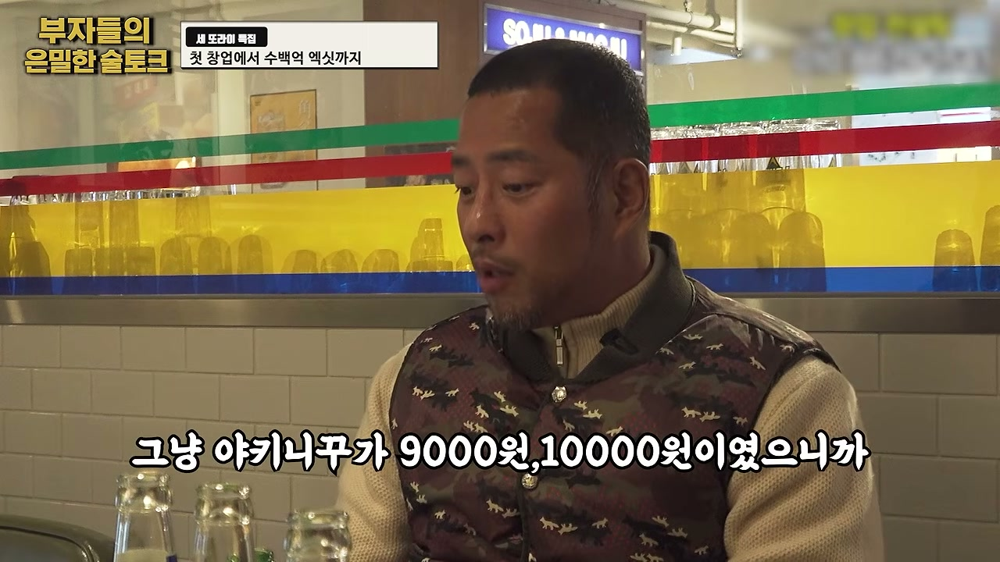
한우집을 통해 새로운 인맥이 생기고, “성공 관계”가 형성되었다. 그는 “인생의 업그레이드라는 게 있잖아. 그런 그레이드를 돈의 잣대로 판단하는 건 아니지만, 그래도 그런 사람들이 사는 문화를 그때 알기 시작했어”라고 말한다. 즉, 고급 고객층과의 만남이 단순한 매출을 넘어 사고방식과 생활 문화의 확장으로 이어졌다는 것이다. 그리고 그 경험이 자연스럽게 엑싯으로 연결됐다고 정리한다.
이 시기를 버틸 수 있던 힘으로는 당시 사귀던 여자친구를 꼽는다. 6년간 사귄 여자친구가 뒷문으로 와서 커피 한 잔씩 사 주고 갔고, 그 힘이 자신을 버티게 해 주었다고 말한다. 또한 어머니, 사랑이라는 힘이 더 큰 무언가에 대한 동기 부여와 지속성을 갖게 하는 에너지원이 되었다고 설명한다. 물론 지금의 아내도 그런 존재다.
그는 “옛날로 돌아가고 싶지 않아. 그래서 열심히 하는 거야”라고 말한다. 우리는 무언가를 일궜고 앞으로도 일궈가야 할 사람들이며, 어려움이 다시 올 것 같은 두려움 때문에 움직인다고 말한다. 동시에 두 번째 동력은 게임이다. 돈을 얼마 벌어서 어떻게 하겠다는 목표보다, 숫자를 1,000억, 1조로 명확히 제시하는 것 자체가 성취감을 주는 게임이라는 것이다.
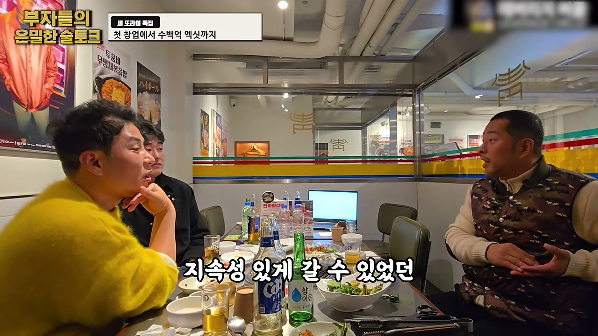
1,000억, 1조 같은 숫자를 명확하게 제시하는 것은 중요한 사업적 포인트다. 하지만 그것이 없어도 먹고 사는 데 지장은 없다. 그가 더 중요하게 여기는 것은 성취감의 짜릿함이다. 자신이 생각하고 상상했던 매장이 실제로 구현되고, 손님들이 줄을 서는 모습을 직접 봤을 때의 쾌감은 어떤 쾌감보다 크다. 이는 돈을 넘어선 창업의 보상이다.
세 번째 의미는 자식이다. 자식들이 아버지가 열심히 끝까지 하는 모습을 보고 자신의 삶을 생각하게 될 것이라고 말한다. “아이들은 부모의 등을 보고 자란다”, “자식은 부모의 거울”이라는 말이 나온다. 자식이 똑바로 인사하지 않는 태도 역시 부모를 보여주는 것이라는 지적이다. 그래서 “자식 사업이 제일 어렵고 중요하다”고 말한다.
아무리 돈이 많아도 자식들이 개판이면 소용없고, 돈은 순간에 까먹을 수 있다고 말한다. 300억이 있으면 몇천억 있는 사람이나 비슷하게 산다. 오마카세, 좋은 와인, 좋은 차, 아크로, 나인원 같은 최고급 주거지도 살 수 있지만, 결국 중요한 것은 자식들의 주변을 보는 일이다. “제일 중요한 자식들의 주변을. 개판이냐 뭐냐”라는 말로 자식 교육과 환경의 중요성이 강조된다.
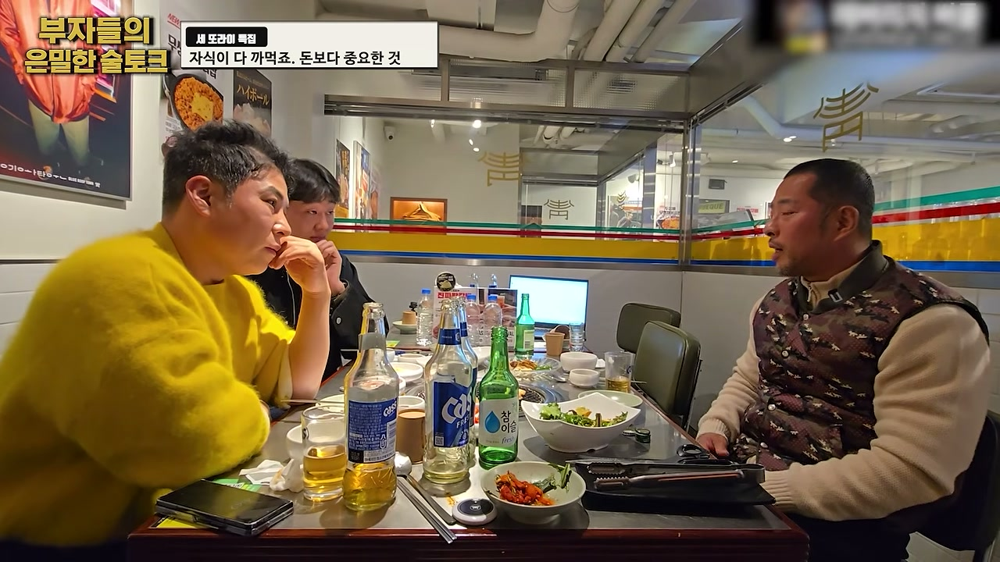
한 출연자는 자식에 대한 책임감을 이야기하며, 자신이 부끄럽지 않게 살면 아이도 그 모습을 배운다고 말한다. 최근 발리 여행을 아들과 둘이 다녀왔고, 남자들끼리라서 더 의미가 있었다고 한다. 아들이 한 명인 사람, 두 명인 사람, 아들 하나 딸 하나인 사람 등 자식이 있는 사람으로서 결혼을 앞두고 장사를 하려는 사람들에게 가장으로서의 책임감을 강조한다.
무언가를 하나 얻으면 다른 하나를 잃을 수 있다. 돈이 많아도 건강이 나쁠 수 있고, 일은 잘 되는데 아내와의 관계가 나쁠 수 있다. 그래서 균형과 밸런스를 챙기는 것이 중요하다. 대표로서의 역할, 가장으로서의 역할, 남편으로서의 역할, 아빠로서의 역할을 조율하는 것이 자신의 인생 철학이자 방향성이라고 말한다. 진행자는 “형 잘 가고 있어? 괜찮아요?”라고 묻고, “남자가 봐도 멋있지 않아?”라고 말한다. 이어서 “아들 코치야, 인생 코치 같은 느낌이 있어”, “너무 조지지 마요”, “얼굴이 되게 선해 보이고 혼날까 봐”라는 웃음 섞인 대화가 이어진다.
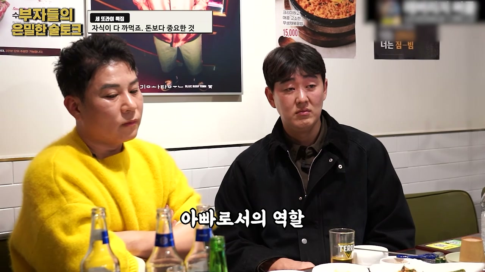
이어서 자식 교육과 외식업 훈련 이야기가 나온다. 중학생 아들을 내년부터 알바 현장에 무조건 투입하겠다는 이야기와 함께 “교육을 시켜야 한다”는 취지의 농담이 나온다. 다른 출연자는 “나도 형 밑바닥부터 불판부터 닦으려고요”라고 말하고, “홀서빙을 해야 돼. 식당 운영에 다”라고 맞받는다. 즉, 외식업의 기본은 불판 닦기와 홀서빙, 상 치우기 같은 바닥 업무에서 시작한다는 것이다.
그는 아들을 외식업으로 훈련시킨다면 테이블 회전이 엄청 빠른 매장에서 상만 치우게 하라고 말한다. 처음에는 자기 테이블만 보지만, 치우다 보면 옆 테이블에 빠진 상이 보이고, 대기 손님 관리까지 하게 된다. “이걸 치우고 얘를 받고, 저걸 치우고 얘를 받고” 이 순환이 돌아가면 식당 운영이 끝난다고 표현한다. 한 단계 더 가면 반찬이 남았는지 주방에 이야기할 수 있는 수준이 된다. 이는 단순 노동이 아니라 관찰력과 우선순위 판단을 키우는 훈련이다.
이어서 “진짜 창업의 성공은 지능이 아니거든. 센스거든”이라는 말이 나온다. 숟가락 하나가 떨어졌을 때 바로 반응하는 것, 그것이 센스다. 외식업에서 이해되지 않는 것은 “몇 분이세요”라고 묻는 습관이다. 식당은 대부분 두 명, 세 명, 네 명 단위로 오고, 2인석은 거의 없이 4인석이기 때문에 굳이 물어볼 필요 없이 눈으로 보고 안내하면 된다. “예약하셨어요?”도 습관적으로 묻지만 아무 의미가 없는 경우가 많다.
특히 한 명이 왔을 때 “몇 분이세요”라고 물으면 상대가 민망해지고, “한 명이어서 얘네가 실망하지 않을까”라는 무언의 상대적 박탈감이 생길 수 있다. 그래서 “물어보면 안 돼”라고 말한다. 카운터 서빙이라면 눈을 보고 “네 명이시죠? 편한 자리 앉으세요”라고 안내하는 것이 낫다. 이런 점에서 외식업은 인문학이며, 성공의 요소가 그 안에 다 있다고 주장한다. 자식이 잘 되려면 서비스업부터 경험하게 해야 하고, 부모가 그릇이 되어 아이를 이런 현장에 밀어 넣어야 한다는 결론으로 이어진다.
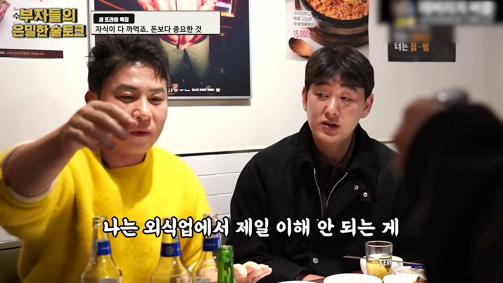
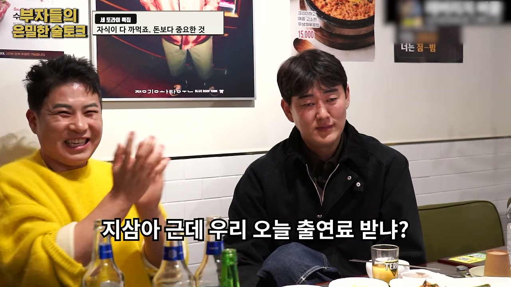
마지막에는 방송 뒷이야기와 농담이 이어진다. “우리 오늘 출연료 받았냐”라는 말에 웃음이 터지고, “채널을 너무 찢어 준 거 아니야?”라는 농담이 나온다. 출연료가 아니라 이런 곳에서 찍으면 PPL 광고를 받아야 된다는 이야기, 유튜브도 해야 한다는 이야기가 오간다. “형이 주지? 한국 사정 모르네. 광고 단가를 모르네”라는 웃음 섞인 대화와 “기본 1,000만 원짜리야 이거”라는 말도 나온다.
한 출연자는 “나 미국 돌아가는 비행기 안에서 오늘 기억이 날 너무 많이 날 거 같아”라고 말하고, 다른 출연자는 “형이 고맙게 생각해 줘서 좋아요”라고 화답한다. 이어서 “넌 이제 분량 다 찍었나 보다. 형님 가세요”라는 마무리 멘트와 “먹을게”라는 대화가 이어진다. 마지막에는 2025년을 마무리하고 2026년을 맞는 시점의 건배사를 요청하는 장면이 나오며, “더 찍으면 안 돼?”라고 묻는 웃음 섞인 대화로 끝난다.
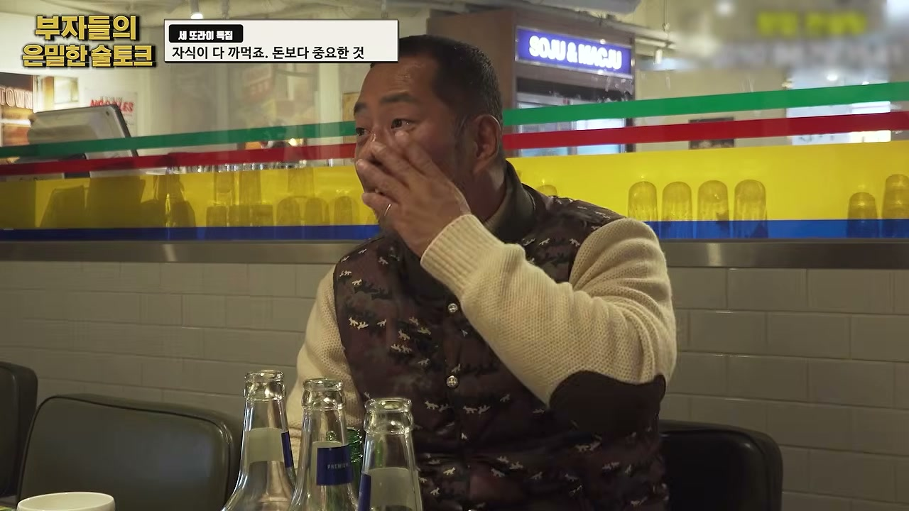
“돈 안 썼다는 건 일만 했다는 얘기야?”
소비를 줄이는 행위가 곧 일에 집중하는 것과 연결된다는 해석이다. 월 500만 원 소비 목표가 단순한 절약이 아니라 자기 변화 실험이라는 점을 보여준다.
“나를 바꿔야 된다. 어떻게 바꿀 거야. 500만 원만 써야겠다.”
목표를 추상적으로 두지 않고 구체적인 숫자와 행동으로 바꾸는 태도가 드러난다.
“책은 생각의 근육이고 운동은 육체적인 근육이니까.”
독서와 운동을 성공을 지탱하는 두 축으로 정의한 표현이다.
“고시원 두 평에서 살았거든요. 월세가 20만 원짜리니까.”
성공 이전의 실제 생활고를 보여주는 대표적인 대목이다.
“꿈꾸는 대로 이루어진다. 그래서 내가 꿈꾸고 싶었던 거 문짝에다 다 붙여놨어요.”
이미지 기법과 100번 쓰기로 자존감을 회복하려 했던 자기암시의 원형이다.
“스트레스 요인이 있으면 내가 해결할 수 있는 것과 해결할 수 없는 것이 있는데, 대부분 해결할 수 없는 거야. 그럼 그걸 받아들여야 돼.”
스트레스 관리의 핵심을 통제 가능성 구분과 수용에 두는 관점이다.
“한두 개만 딱 남겨. 나는 이런 거를 컴퓨터로 안 했으면 좋겠어. 직접 수기로 펜으로 써보는 게 힘이 엄청 커.”
생각을 정리하고 실행으로 옮기는 데 손으로 쓰는 행위가 중요하다는 조언이다.
“위기에서 나를 지켜줄 건 건강과 돈이라고 생각해. 그 두 가지 외에는 사람도 아니야.”
인간관계와 자산에 대한 냉정한 현실 인식을 드러내는 표현이다.
“사업은 사람 일을 해야 되고 자산은 돈 일을 하는 건데, 사람은 변할 수 있잖아.”
사업과 자산의 성격 차이를 명확히 구분한 발언이다.
“돈이 벌릴 때는 진짜 미친듯이 벌려요. 얼마 벌리는지도 몰라. 근데 빠질 때는 손가락 사이로 팍 빠지더라고요.”
현금흐름의 변동성을 표현하며, 벌 때 자산으로 묶어두어야 한다는 논리로 이어진다.
“돈 벌 생각만 하면 안 되고 지킬 생각을 해야 되는 거야.”
성공한 뒤에도 자산을 방어해야 한다는 핵심 경고다.
“장사하려면 적어도 6개월, 1년은 경험해야 돼.”
창업 전 현장 경험의 중요성을 강조한 조언이다.
“아이들은 그 부모의 등을 보고 자란다니까요. 자식은 부모의 거울이야.”
자녀 교육에서 부모의 행동과 태도가 얼마나 중요한지를 보여주는 표현이다.
“아무리 돈 많으면 뭐해. 애들 개판이고. 돈 줘가 있어도 그거 까먹는 거는 순간이지.”
자식 교육과 가정의 중요성을 돈보다 우위에 두는 발언이다.
“진짜 창업의 성공은 지능이 아니거든. 센스거든.”
외식업과 서비스업에서 관찰력과 상황 판단이 성공의 핵심이라는 주장이다.
“몇 분이세요, 예약하셨어요? 이 지랄지가 너무 습관이야. 아무 의미가 없거든.”
불필요한 관행을 비판하며, 눈으로 보고 판단하는 서비스 센스를 강조한 표현이다.
이 영상의 2편은 “가난한 뇌”를 단순히 돈이 없는 상태로만 정의하지 않는다. 고시원 2평, 낮은 자존감, 스트레스, 소비 습관, 사람에 대한 환상, 현금흐름에 대한 무지는 모두 가난한 뇌의 구성 요소로 제시된다. 반대로 부자 뇌는 구체적인 소비 목표를 세우고, 이미지와 글쓰기로 목표를 각인하며, 스트레스를 통제 가능한 행동으로 전환하고, 독서와 운동으로 생각과 몸을 단련하는 습관에서 시작된다.
가장 실용적인 시사점은 현금흐름을 자산으로 바꾸는 능력이다. 돈이 벌릴 때 자산으로 묶어두지 않으면 손가락 사이로 빠져나가고, 사업이 어려울 때 미래의 돈을 당겨주는 사람은 없다. 그래서 건강과 돈, 특히 부동산·금·주식 같은 자산이 위기에서 최후의 보루가 된다. 동시에 자산만으로는 설명되지 않는 성취감, 줄 서는 매장을 보는 짜릿함, 자식에게 부끄럽지 않은 삶의 태도가 성공의 또 다른 축으로 제시된다.
창업과 외식업에 대한 조언도 구체적이다. 무권리 창업, 상권 분석, 수요와 공급의 빈틈, 6개월에서 1년의 현장 경험, 작은 월세로 감당 가능한 실험, 고객층 확장과 인맥 형성, 그리고 엑싯까지의 흐름이 하나의 사례처럼 제시된다. 특히 외식업은 인문학이며, 성공은 지능이 아니라 센스라는 주장은 서비스 현장에서 고객을 관찰하고 불필요한 질문을 줄이며 상황에 맞게 판단하는 능력을 강조한다.
마지막으로 이 영상은 성공한 사람도 여전히 정서적 불안감과 과거의 두려움을 안고 살아간다는 점을 보여준다. 1,000억이라는 숫자, 1조라는 목표, 엑싯과 자산은 중요하지만, 결국 남는 것은 시간과 공간의 여유, 가족과의 균형, 자식이 부모의 등을 보고 배우는 삶의 태도다. 이는 “가난한 뇌를 연매출 400억 CEO로 만든 방법”이라는 제목이 단순한 재테크 기술이 아니라 소비·습관·자산·관계·교육을 통합한 삶의 운영 방식을 말하고 있음을 보여준다.
댓글
GitHub 이슈 기반 댓글 시스템입니다.